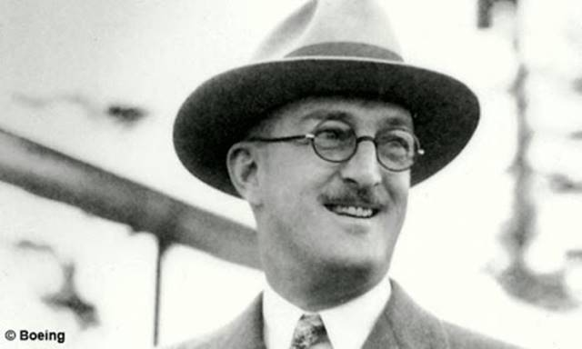
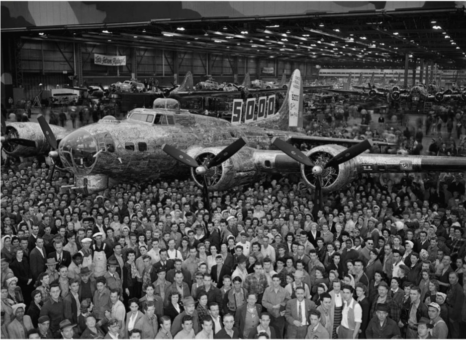
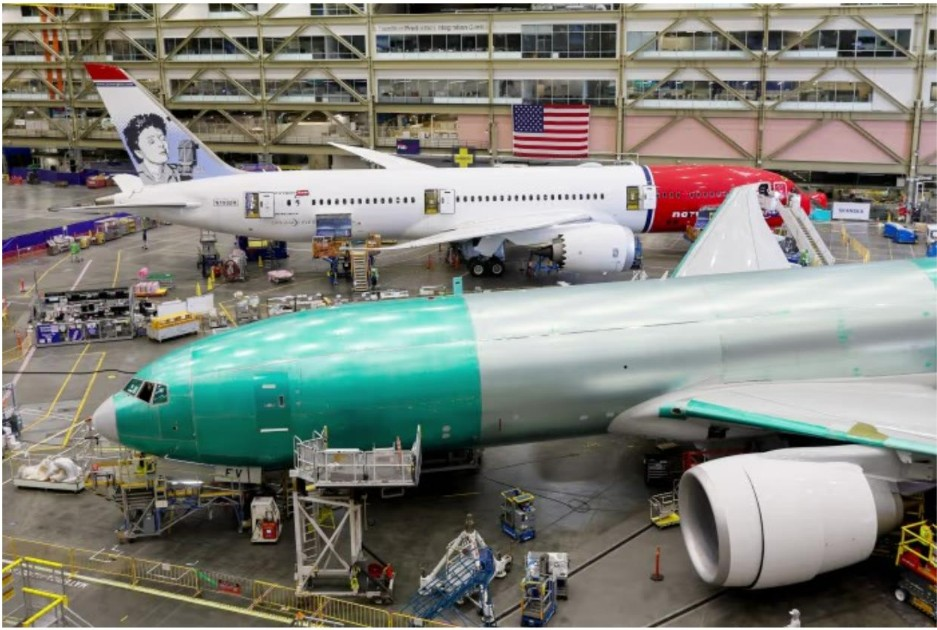

Early Days
William E. Boeing founded the Boeing in 1916 in Seattle, Washington. Originally called Pacific Aero Products, the company built seaplanes made largely of wood and fabric. Boeing’s first aircraft, the B&W seaplane, reflected the experimental spirit of early aviation and helped establish the company’s foundation.

World War 2
During World War II, Boeing became one of America’s most important aircraft manufacturers. The company produced thousands of military aircraft, including the famous B-17 Flying Fortress and B-29 Superfortress bombers. Massive factories and a huge workforce helped support the Allied war effort and transformed Boeing into a major aerospace company.

Boeing Enters the Jet Age
In the 1950s, Boeing helped launch the commercial jet age with the groundbreaking Boeing 707. This aircraft dramatically reduced travel time across long distances and changed global air travel. The 707’s success positioned Boeing as a leader in commercial aviation and paved the way for future jetliners.

Boeing in the Modern Day
Today, Boeing is one of the world’s largest aerospace companies. Its aircraft, such as the Boeing 787 Dreamliner and Boeing 737, serve airlines worldwide. Boeing also builds military aircraft, satellites, and space systems, continuing to play a major role in aviation and space exploration.